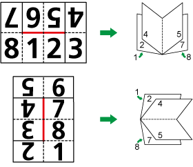

Use the following procedure to arrange eight pages on one sheet using a layout suitable for pamphlets. Cut and fold the sheet according to the lines to make a pamphlet.
If the orientation of the first page is portrait, the pamphlet will open to the left. If it is landscape, it will open to the top.

Red line: Cut line / Dotted line: Mountain fold / Solid line: Valley fold
Open the printing preferences dialog box after creating a document in an application.
Click the Imposition menu on the Detailed Settings tab.
Select On in the Pamphlet: list.
Select the Draw Border check box to print lines on the sheet for cutting and folding, if necessary.
After making any other necessary settings, click OK to close the printing preferences dialog box.
Start printing.